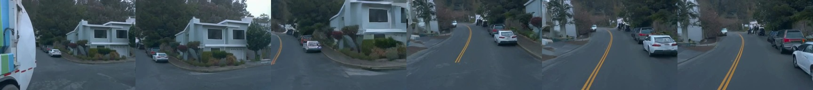

Shared conditioning
Past frames and the chosen driving action become shared inputs.
Self-Reactive World Model for Autonomous Driving
Same right turn.
Different responses.

Turning, changing lanes, and braking can affect other agents. A world model should capture their responses.
Self-reactivity means modeling how agents respond to a driving action and showing those responses in the generated video.
Conceptual animations illustrating self-reactivity.
ReactDrive models how agents respond, then uses those responses to generate the next frames.
Past frames and the chosen driving action become shared inputs.
Recorded trajectories supervise agent positions, velocities, and state validity.
Agent response modeling and video generation are trained together.
Similar image fidelity
More accurate agent paths
Better ego control
Lower collision rate
Predictive Driver Model Score ↑
Zoomed axis: 83–86 of 0–100.
Compared with real data alone
NC: no-at-fault collision. DAC: drivable-area compliance. TTC: time-to-collision compliance. EP: ego progress. DDC: driving-direction compliance. PDMS: Predictive Driver Model Score. Both augmentation settings add equal numbers of generated samples.
34 raters · 50 cases · 623 completed comparisons per criterion. Model identities were hidden and left/right positions randomized. Percentages pool judgments across the five baselines.